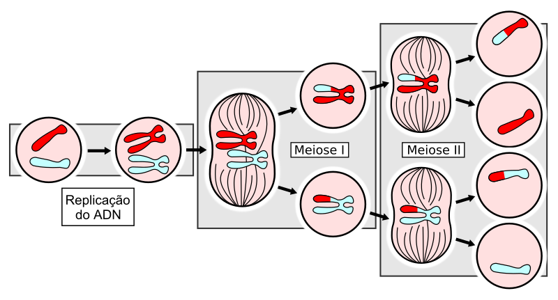

As mutações genéticas que são alterações na sequência de nucleotídeos do DNA de um organismo. Elas podem ocorrer de forma espontânea ou devido à influência de agentes externos, como radiação ou substâncias químicas. Essas mudanças podem ser:
Benéficas : contribuindo para adaptações evolutivas.
Neutras : sem impacto significativo na sobrevivência ou reprodução.
Prejudiciais : levando a doenças genéticas ou à redução da aptidão.
Aclarando, que as mutações genéticas são a principal causa da variabilidade intraespecífica porque alteram os genes, que logo expressados resultam em mudanças notórias a nivel físico, ou mais desapercibidas que só alteram o genotipo (interno) do individuo. Além de seus efeitos no individuo, se deve ter em conta que uma mutação podem alterar uma maior ou menor quantidade de DNA.
Uns exemplos de mutações genéticas nos cromossomas humanos são os casos de trissomia-21 (uma cópia extra do cromossoma 21), síndrome de Klinefelter (acréscimo de um cromossoma X) e síndrome de Turner (ausencia de um cromossoma X).
| Condição | Efeitos |
|---|---|
| Síndrome de Turner | Baixa estatura, infertilidade, pescoço alado, problemas cardíacos. |
| Síndrome de Klinefelter | Testículos pequenos, infertilidade, menor massa muscular. |
| Trissomia 21 (Síndrome de Down) | Retardo intelectual, características faciais específicas. |
| Humano normal | Desenvolvimento típico, sem alterações genéticas ligadas a estas condições. |
A recombinação genética é um processo biológico que ocorre durante a meiose, o tipo de divisão celular que forma gametas (células sexuais, como óvulos e espermatozoides) em organismos sexuados. Ela envolve o rearranjo de material genético entre cromossomos homólogos, resultando em novas combinações de genes que não estavam presentes nos cromossomos originais dos pais.
Ela atua sobre as mutações gerando multiples combinações possivéis nas gâmetas de um organismo; como cada espécie possui um fundo genético único (conjunto de alelos presentes na população) e amplo, a variabilidade genética aumenta exponencialmente.
Agora com todos os conceitos presentados, podemos compreender melhor a seleção natural, desde um ponto de vista mais amplo. A seleção natural trata sobre como certos genes quando expressos em um organismo, podem conferir vantagens adaptativas, tornando esse organismo mais apto a sobreviver e reproduzir-se o que gradualmente formará, ou não, uma nova espécie com o acúmulo de genes distintivos.
Sendo assim, que acontece quando uma população entra em contato com outra? Ocorre fluxo gênico, ou seja troca de genes de indivíduos de diferentes grupos, e se essa população sofrer deriva genetica modificando cadeias de DNA insignificantes aleatoriamente? na final o fundo genetico da população mudou, sofrendo pequenas variações que a curto prazo não se manifestam, mas ao longo prazo, alteram a espécie tornando-a completamente diferente ao estado inicial.

A seleção artificial é um processo no qual os seres humanos escolhem características úteis em organismos vivos, como plantas ou animais, para aumentar essas características nas gerações seguintes. Este conceito é aplicado na agricultura, biotecnologia e criado de gados.
O procedimento é realizado com a finalidade de obter um recurso, seja um animal de estimação, plantas mais produtivas e resistentes ou gado mais rentável. No momento, é possível notar casos de seleção artificial, como o desenvolvimento de plantas geneticamente modificadas, como soja e milho, e a reprodução seletiva de espécies animais com traços específicos. Em agricultura, são colhidas sementes de plantas mais fortes para obter colheitas melhores e mais saudáveis. Da mesma forma, na pecuária, animais mais férteis ou com melhor carcaça são preferidos, seja na reprodução de gado bovino superior.
Neste último ponto, há também a manipulação de engenharia genética, que permite a modificação do DNA de organismos vivos, resultando em plantas ou animais de características avanzadas, contribuindo para a saúde humana, como fabricação de remédios e vacina. O uso da seleção artificial gera debates éticos devido aos possíveis efeitos na diversidade biológica e no bem-estar dos animais.